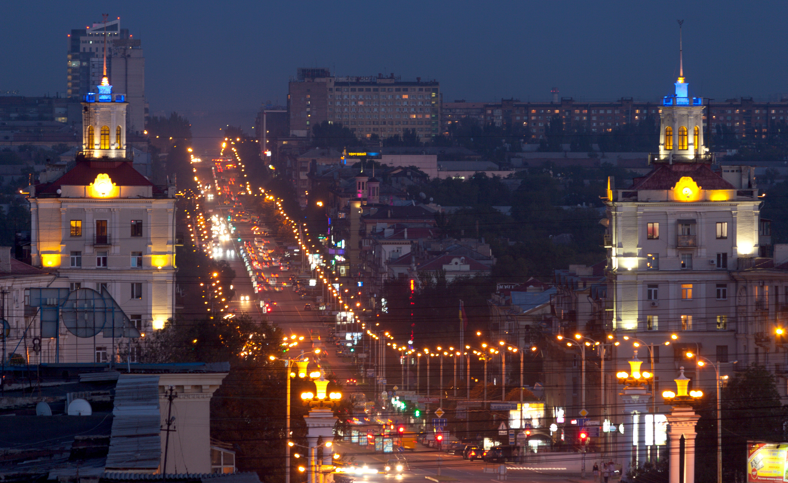
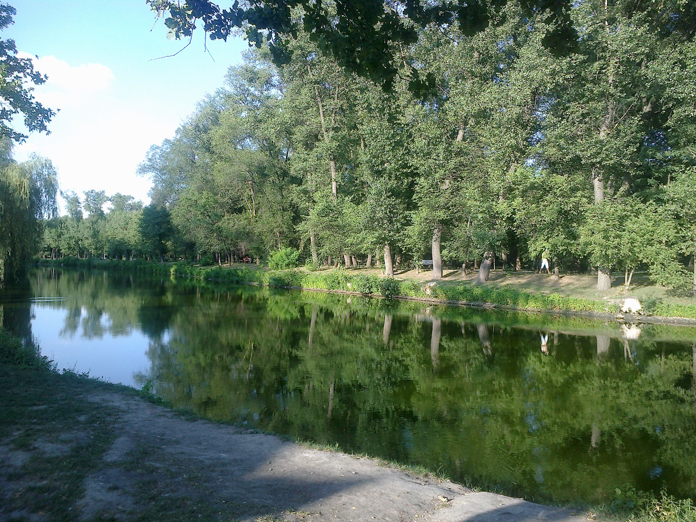
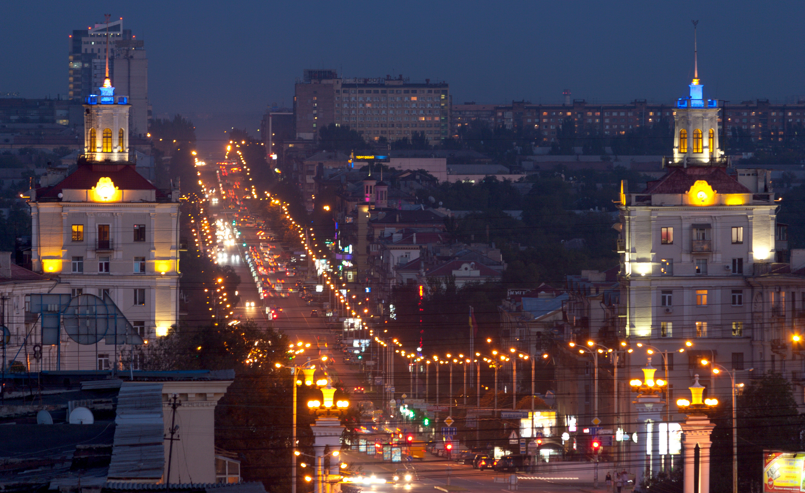
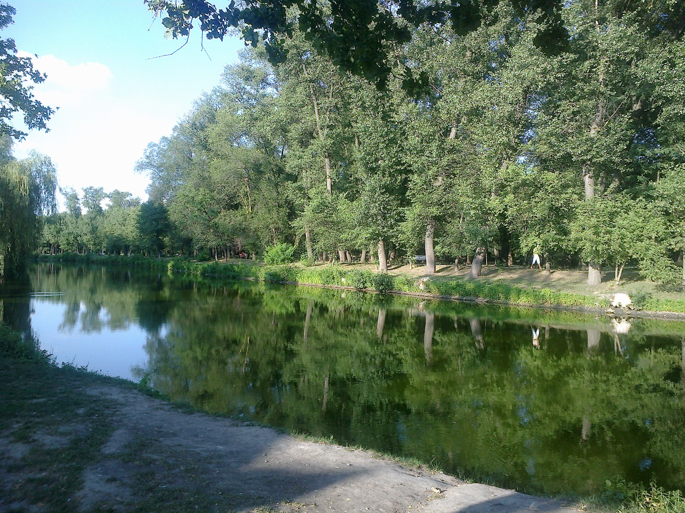

.jpg) Запоріжжя
Запоріжжя
Запоріжжя знаходиться у Східній Україні, є адміністративним центром Запорізької області. Розташоване на річці Дніпро, засноване як фортеця
Олександрівськ 28 серпня 1770 року, проте існували інші раніші оселення на території сьогоднішнього міста. Є технополісом, значним культурним та освітнім
осередком. Населення: 743 113 (2018). Площа: 331 км².
Запоріжжя — місто, що до 1921 року носило назву Олександрівськ за назвою Олександрівської фортеці, закладеної в 1770 році. В 1921 році 15 березня
було перейменовано в Запоріжжя.
Сучасне Запоріжжя це великий промисловий центр і технополіс. Тут сконцентровано найпотужніші промислові комплекси України: металургійні —
«Запоріжсталь», працює з листопада 1933 року
«Дніпроспецсталь», Запорізький алюмінієвий комбінат, Запорізький титано-магнієвий комбінат, Запорізький завод феросплавів
машинобудівні — Мотор Січ — найпотужніший виробник у світі авіаційних двигунів для літаків Ан-225 «Мрія», Ан-124 «Руслан» та для гелікоптерів Мі-26,
рік заснування 1907
Запорізький автомобілебудівний завод (ЗАЗ) — єдине в країні підприємство з повним виробничим циклом виготовлення автомобілів (раніше —
«Запорожець», «Таврія», «Славута», а зараз — Sens, Lanos, Forza, Opel, автобус I-VAN), рік заснування 1863
енергетичні — ДніпроГЕС — найперша дніпровська гідроелектростанція, збудовано в 1932 році.
Місто Запоріжжя має чотири діючі мости через річку Дніпро: дамбовий міст, два мости Преображенського, арковий міст .
Головна магістраль міста — проспект Соборний. Він перетинає майже всю лівобережну частину міста від залізничного вокзалу до Дніпровської ГЕС, довжина
становить майже 11 км.
Клімат — атлантично-континентальний, з вираженими в літній період посушливими суховійними явищами. Літо жарке, зазвичай починається в перших числах
травня і триває до початку жовтня. Зима помірно м'яка, часто спостерігається відсутність стійкого сніжного покриву.
Міський транспорт представлений маршрутними таксі (охоплюють усе місто), трамваями та тролейбусами (центр та окремі
райони), автобусами (окремі маршрути) та туристичним річковим трамвайчиком (курсує лише в теплу пору року, для відпочиваючих) Приміський транспорт представлений маршрутками,
автобусами та приміськими потягами) деякі мають по декілька зупинок у межах міста)

 

контакти


контакти